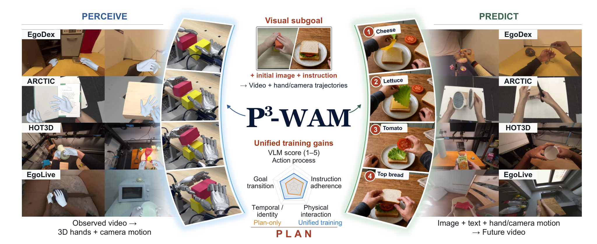
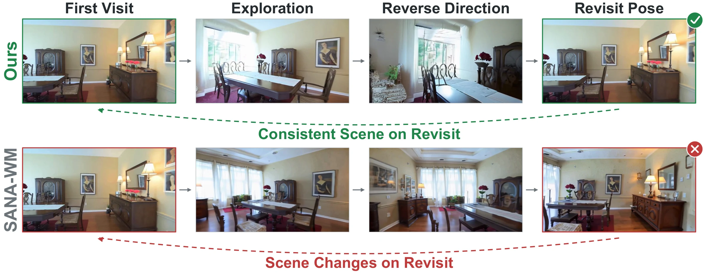
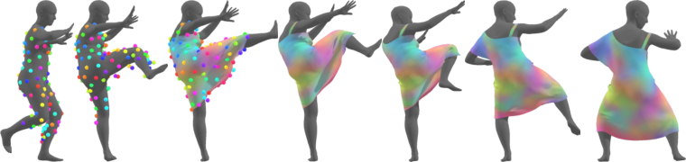
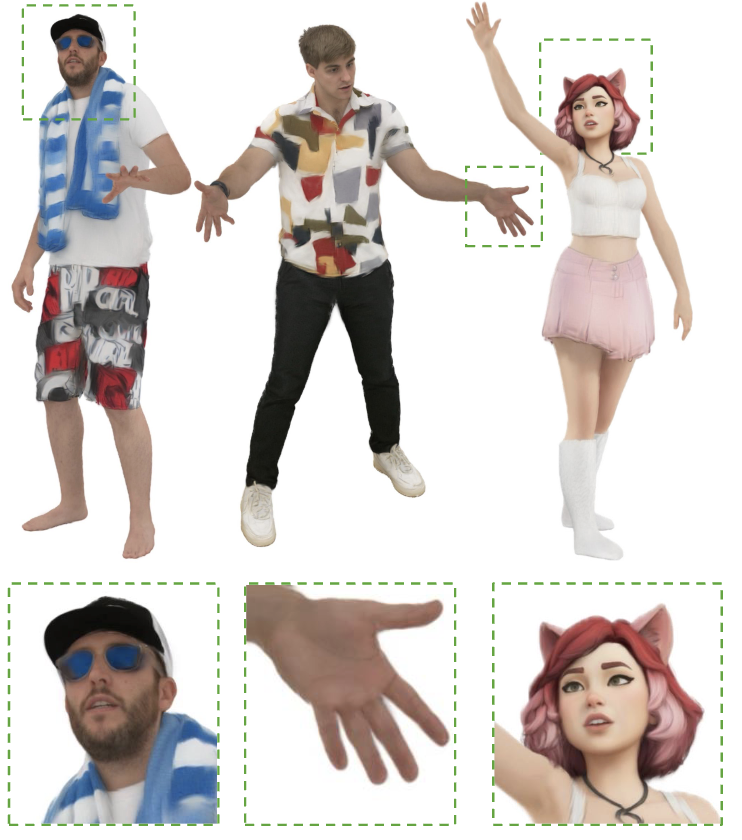
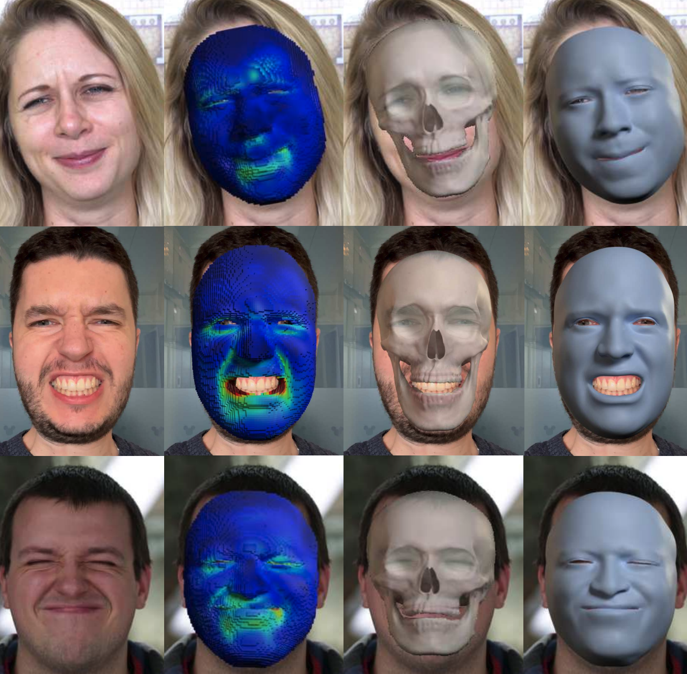
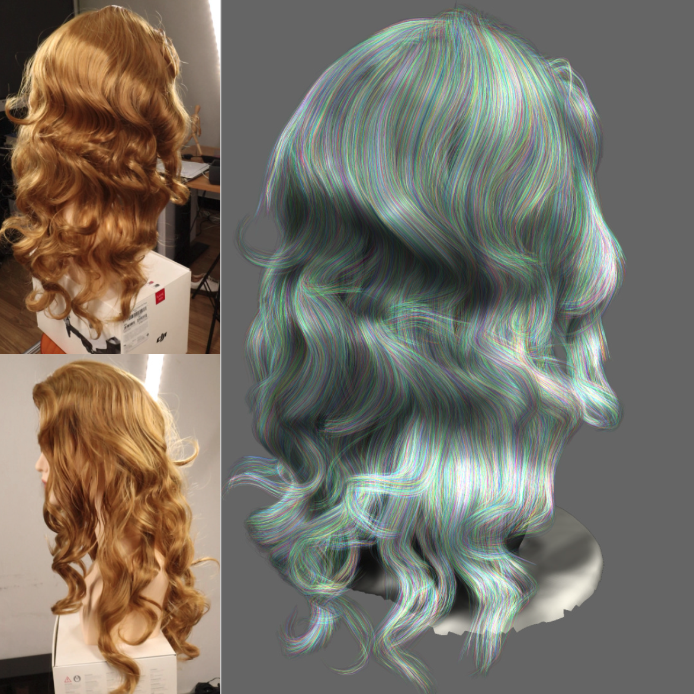
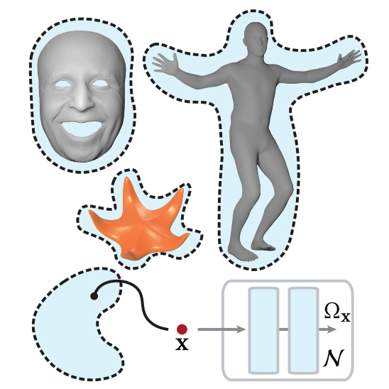

arXiv preprint 2026
Perceive, Predict, and Plan: a Unified World Action Model for Egocentric Dexterous Manipulation
A unified world action model for 3D perception, video prediction, and goal-directed dexterous planning.
I am building something new in stealth mode.
I worked on generative modeling, physical simulation, and scalable learning for dynamic 3D/4D humans at Meta, where I was a Research Scientist.
I did my Ph.D. at ETH Zurich in the Computer Graphics Laboratory, working closely with Disney Research Studios on physics-based facial simulation. My thesis received the ETH Medal.
I was supervised by Markus Gross, Barbara Solenthaler, and Derek Bradley, and also had the opportunity to work with Eftychios Sifakis.
yanglitschi [at] gmail.com
I build generative models that capture how the physical world looks, moves, and responds to actions. My work combines 3D structure, physical simulation, and learning, from controllable digital humans to interactive world models.

arXiv preprint 2026
A unified world action model for 3D perception, video prediction, and goal-directed dexterous planning.

arXiv preprint 2026
Persistent visual memory through test-time training for consistent, real-time video world generation.

SIGGRAPH Asia 2026 / Conference Track
Real-time neural garment simulation with virtual bones, fine wrinkle detail, and hypernetwork conditioning.

CVPR 2026
High-fidelity, controllable 3D avatars through large-scale pretraining and post-training.

SIGGRAPH 2024 / ACM Transactions on Graphics
A generalizable physical face model that fits new identities from a scan or a single image.

CVPR 2024 Oral · 3.3%
Detailed 3D hair reconstruction from an ordinary monocular video.

SIGGRAPH 2022 / ACM Transactions on Graphics Honorable Mention
Learning continuous actuation fields for expressive, physics-driven soft-body animation.